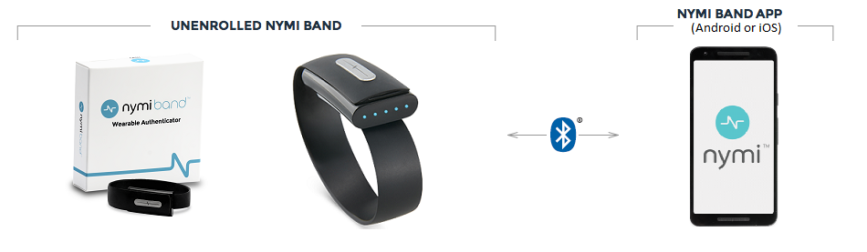
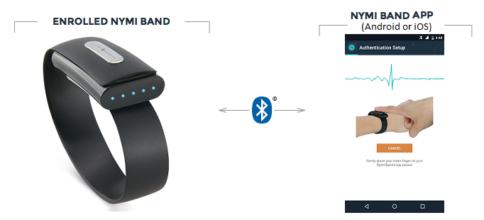
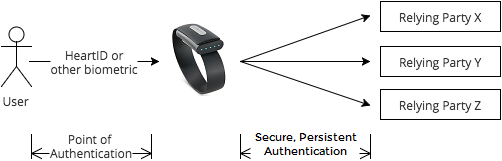
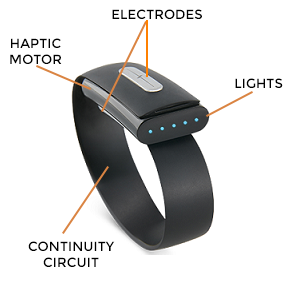
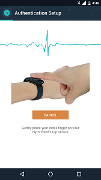
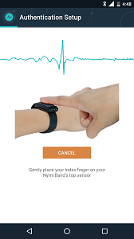
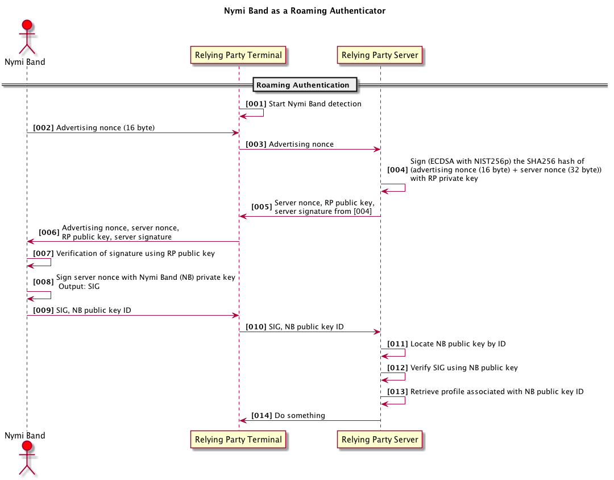

Introduction
Welcome to the Nymi SDK 4.0
This version of the Nymi™ SDK introduces a revised API that runs as an in-process C/C++ based static library, and targets robustness and speed of Nymi-enabled Application (NEA) development.
The SDK enables exciting possibilities for development of applications using the innovative Nymi Band™. The Nymi Band implements secure, persistent authentication and allows application developers to authenticate users conveniently and seamlessly, without the need for passwords or repeated interruptions to the user. The authentication capability travels with the user in the Nymi Band wearable form factor, which enables the user to biometrically authenticate once with the Nymi Band and then interact securely with their digital and physical assets.
Here are just a few examples of ways to integrate Nymi authentication:
- Unlocking computers without a password
- Physical Access - unlocking doors without a card or fob key
- Web service account authentication
- Second factor (2FA) digital access
- Public terminal authentication for registered users (for example, airports, hotels, or hospitals)
In all cases, the privacy of the end user is our primary consideration. The end user must give explicit permission for entities to interact with their Nymi Band.
New in SDK 4.0
In SDK 4.0, the Nymi JSON API now runs as an in-process C/C++ based static library, instead of as a websocket server as in SDK 3.1. The JSON protocol has also changed. For details, see the Nymi JSON API Reference documentation.
This version of the SDK targets Nymi firmware version 1.9.7. and later.
NEAs written with SDK 3.1 must be updated to account for the new in-process library and the JSON API protocol changes.
SDK 4.0 also includes support for a new Bluetooth® advertisement protocol that enhances performance and the reliability of communication with the Nymi Band.
Starting Points
-
For an overview of the new SDK and the NapiCppWrapper sample app provided by Nymi, see the Developer Quick Start and NapiCppWrapper Sample App Walkthrough sections.
-
For a deeper look into the fundamentals of developing NEAs with SDK 4.0, see the API Concepts section.
-
For background information on the Nymi Band itself, see the The Nymi Band section of the Nymi Ecosystem.
Questions? Comments?
Contact Nymi’s developer relations team on the Nymi Developer Forum.
For answers to common questions, see the FAQ.
The Nymi Ecosystem
The Nymi Band is an authenticator that interacts with various apps, devices, and identity systems. The collection of these apps, devices, identity systems, and Nymi Bands make up the Nymi Ecosystem.
Nymi Bands communicate with the Nymi Ecosystem through Bluetooth® Low Energy wireless technology. At a high level, there are two types of apps in the ecosystem:
- The Nymi Band application is a mobile app provided by Nymi. There must be a one-to-one pairing between Nymi Band and app. The Nymi Band app does the following:
- Establishes the one-to-one pairing with a Nymi Band through a one-time setup process
- Manages your alternate authentication options (for example, Touch ID or password)
- Administers the Nymi Band (for example, firmware updates)
- A Nymi-enabled Application (NEA) is an application (app) that Nymi or the developer community writes, using the Nymi SDK and JSON API. An NEA uses the authentication and/or security functionality provided by an authenticated Nymi Band.
Note: The Nymi Band does not use traditional Bluetooth pairing for communication. The Nymi Band app manages the connection with the Nymi Band, using encryption that is independent of the Bluetooth protocol.
The following diagrams characterize the Nymi Band’s interactions with its paired Nymi Band app, and with the ecosystem of NEAs. It highlights the sequential steps required to use the Nymi Band as an authenticator, beginning with the setup of an out-of-the-box Nymi Band.
Setup
Use the Nymi Band app (available on Google Play™ or the App Store®) to set up your Nymi Band and create an associated biometric profile. Setup requires a Bluetooth® Low Energy wireless connection between your Nymi Band and the Nymi Band app. Profile creation is typically a one-time process in the lifetime of the Nymi Band. However, if you reset the band, you must create a new profile.

Authentication
A Nymi Band is authenticated by HeartID on the Nymi Band itself, or by Touch ID or other secure mechanism through the Nymi Band app. Authentication is typically done once a day, and persists until you unclasp the band.

NEA Communication
An NEA communicates with an authenticated Nymi Band through the Nymi JSON API and Bluetooth® wireless technology. The Nymi Band must explicitly grant an NEA permission to connect to it. This is done through the provisioning process.

The Nymi Band
The Nymi Band enables secure, persistent authentication in the form of a wearable, multi-factor biometric solution.
Persistent Authentication
Users are typically authenticated to a system by the discrete act of presenting some token, to gain some access or privilege. Examples include entering an account password for a web service, or entering a PIN at an ATM. This type of authentication loses trust over time. For example, many people opt to stay logged into their email to avoid repeatedly typing their password. Here, the confidence that an individual currently using a service is the same individual that authenticated the access decreases as the time since authentication increases. There is a trade-off between security and convenience.
The Nymi Band presents an elegant solution that does not compromise security for convenience. Instead of requiring the user to remember unique and complex passwords to various parties, the user authenticates the Nymi Band, which then relays the user’s authentication status to all subscribing parties. With the Nymi Band acting as the authenticator on behalf of the user, we can now use cryptographic forms of authentication that provide security well above passwords and PINs. Furthermore, confidence in the Nymi Band’s state of authentication is not a function of time thanks to the on-body persistence of the Nymi Band’s authenticated state: the user authenticates the band when it is on their wrist, and when the band comes off the user’s wrist, the Nymi Band transitions to an unauthenticated state, becoming invisible to all parties. This allows an NEA to persistently authenticate a user’s presence without additional effort by the user, opening a world of possibilities to enhance both security and convenience.
The Nymi Band may also be easily integrated into multi-factor authentication systems.
The following diagrams illustrate how the Nymi Band changes the traditional password-based authentication space. A relying party is any entity that requires user authentication.
Password-based solution does not scale well with the increase of relying parties and increase of security requirements for passwords.

Nymi solution provides increased security and greater simplicity.

Anatomy of the Nymi Band.

HeartID - ECG as a Biometric
HeartID™ is the unique biometric authentication algorithm developed by Nymi that uses the electrocardiogram (ECG) of a user as a biometric identifier. An ECG signal is the electrical signal generated by an individual’s heart. The user’s ECG is read through the two electrodes on the Nymi Band, and analyzed by HeartID. HeartID uses machine learning algorithms to extract features relating to the shape of the ECG signal. These algorithms are invariant to the heart rate. That means the HeartID algorithm is not affected by going for a run, or enjoying a cup of coffee. The HeartID algorithm is currently integrated into the Nymi Band itself, and enables on-band user authentication.
Why use ECG as a biometric? One of the earliest biometrics used was fingerprints because they are universal, unique, permanent, and easy to capture. More recently, facial recognition has become common for applications ranging from access control to surveillance. Fingerprints and facial features are categorized as extrinsic biometric identifiers, and they can often be captured without an individual’s consent (known as skimming). ECG, on the other hand, is an intrinsic biometric identifier, and is not susceptible to skimming attacks without an individual’s cooperation. Capturing ECG data requires direct or very close contact with the user, making it suitable for secure, user-controlled biometric recognition systems. Unlike fingerprints, latent samples are not left behind on contact surfaces. Additionally, ECG can be captured through techniques that are seamless and convenient to the user.
Nymi Band App
The Nymi Band app is a mobile application that helps you set up and manage your Nymi Band profile. It is available for Android on Google Play™ and for iOS on the App Store®. To create your profile with the Nymi Band app, follow the instructions in the app. The setup process involves capturing approximately one minute of heartbeat data with the Nymi Band, as well as creating a secondary method of authentication (for example, fingerprint recognition, or a password).
The setup process in the Nymi Band app
 

After setup is complete, the Nymi Band app is used for managing profile settings, fitness tracking data, and alternate authentication methods, enhancing your biometric profile with more heartbeat data, and managing your provisions to NEAs.
Nymi-enabled Apps
Nymi-enabled Applications (NEAs) are applications that use the Nymi Band’s authentication and security capabilities. An NEA communicates only with authenticated Nymi Bands. NEAs are written and managed by relying parties (RP). A relying party is defined as an entity, with a physical or web presence, that uses the Nymi Band to authenticate its users.
NEAs can run on any machine that is Bluetooth® compliant and runs a supported platform. See the Nymi API Concepts section to learn about the technical specifications of an NEA and how it can interact with the Nymi JSON API.
Here are some examples of what an NEA could do:
- General authentication
- File encryption
- Password vault
- SSH integration
- Smart spaces
Developer Quick Start
Use Nymi’s free SDK to develop Nymi-enabled applications (NEAs) for use with the Nymi Band. The SDK includes the Nymi JSON API, and the Nymulator (Nymi Band Simulator) to test your code without the need for a physical Nymi Band.
The Nymi JSON API 4.0 runs as an in-process static library. To demonstrate the functionality exposed through the JSON API, we have provided a sample application (NapiCppWrapper). The sample app is an NEA written in C++, over a wrapper layer that provides a C++ interface to the JSON API.
The NapiCppWrapper sample app demonstrates how to provision a Nymi Band, how to obtain the authentication status of the Nymi Band, and how to obtain cryptographic assets from a provisioned Nymi Band.
This Developer Quick Start walks you through the installation of the sample app, the initialization of the JSON API, and the provisioning process. From there, you can follow the NapiCppWrapper Sample App Walkthrough to explore the other functions.
Supported Platforms
SDK 4.0 currently supports the following platforms:
| OS | Supported Versions | Required Hardware | Recommended Developer Tools |
|---|---|---|---|
| Apple Mac OS | OS X Yosemite (10.10) | Bluetooth® Low Energy 4.0 | Xcode 7.2.1 |
| OS X El Capitan (10.11) | Bluetooth® Smart Ready | ||
| Microsoft Windows | Windows 10, 8.1, 7 | BLED112 Bluetooth Smart Adapter | Visual Studio 2015 |
| 64 bit only | (required for, and included with, the Nymi Band) |
Contents of the SDK Package
The Nymi SDK package structure is as follows:
- (sdk4.0) .zip/.tar
- API
- Documentation
- NymiBluetoothService (Windows OS only)
- Nymulator
- LICENSE.txt
Development with the Nymulator
You do not need a physical Nymi Band for NEA development. You can start developing immediately with the Nymulator, which simulates up to six Nymi Bands in a software environment.
The Nymulator is supported on the same OS X and Windows OS versions as the SDK.
The Development with a Nymi Band section describes the configuration changes required for running the JSON API and the NapiCppWrapper sample app against a physical Nymi Band.
Developing on Windows Platforms
- Download the SDK zip. The link below is a direct download. All files are available on GitHub®.
- Extract the contents of the zip.
Note: For this Quick Start guide, the example directorysdk4.0represents the top level directory of the extracted SDK files. - The Nymulator requires the Visual Studio Redistributable 2013 x86, which is included in:
sdk4.0\Nymulator\vcredist_x86.exe.
If you do not already have the redistributable package installed, runvcredist_x86.exe. - Clone or fork NapiCppWrapper from the Nymi/SampleApps GitHub repository. The link below opens in a new tab.
- Copy the API files from
sdk4.0\API\into the dependencies directory of the sample app:NapiCppWrapper\deps\.API\json-napi.his always requiredAPI\napi-net.libis always required
Note: The Nymi SDK supports only 64 bit Windows platforms.
- Start the Nymulator. The Nymulator must be running before you start NapiCppWrapper, otherwise the JSON API cannot be properly initalized.
- Double-click the executable:
sdk4.0\Nymulator\Nymulator.exe. - Make a note of the port number that the Nymulator is using. By default this is port 9088. If this port is in use by another process, the Nymulator decrements the number and tries again until it finds an open port.
- Double-click the executable:
- Open NapiCppWrapper and set the port number.
- Open the
NapiCpp.slnsolution in Visual Studio 2015. - Open
main.cpp. - Set
nPortto the Nymulator port.
- Open the
- Start the Nymi JSON API and connect to the Nymulator.
- Build
NapiCpp. - In Windows Explorer, copy the
config.jsonfile fromNapiCppWrapper\win-vs-2015\NapiCpp\NapiCpp\to the directory containing the NapiCpp executable that you just built (for example:NapiCpp\x64\Release\). -
Run
NapiCpp.
A command window opens and displays the following message:NymiApi initialization succeeded
received message: {"completed":true,"exchange":"*provisioning*","operation":["provision","run","start"],"path":"provision/run/start","response":{},"successful":true}
Provisioning mode is now start
- Build
-
In the Nymulator, click Add to create a virtual Nymi Band. When they are created, virtual Nymi Bands are authenticated, but not provisioned.
-
Provision the Nymi Band. Provisioning is a one-time process that establishes a trusted relationship between the Nymi Band and a specific NEA running on a specific device. The Nymi Band initiates the process by generating a pattern that appears on the Nymi Band’s LEDs. This pattern is also computed independently by the JSON API and sent to the NEA. The user wearing the Nymi Band must confirm that the patterns match.
The pattern appears on the Nymi Band graphic in the upper-right corner of the Nymulator. At the same time, the pattern also appears in the command window, where a plus sign (+) indicates an LED is ON, and a minus sign (-) indicates an LED is OFF. If the two patterns match, you accept the pattern as described in this procedure.
- In the Nymulator, click Begin Provisioning. A pattern appears on the Nymi Band graphic.
- In the command window, the following message appears:
Pattern(s) discovered:, followed by a series of 5 plus and/or minus signs - Confirm that the pattern in the command window matches the one displayed in the Nymulator.
- Type
acceptfollowed by the plus/minus sign pattern that was discovered.
Note that there must be a space betweenacceptand the pattern.
For example:
In the Nymulator, you see: 
In the command window, you see: Pattern(s) discovered: -+-+-
Confirm the pattern on your Nymi Band by the accept command. Example: enter accept -+--+
You type: accept -+-+-
Success messages appear in the command window, and in the Nymulator Activity Log.
Note: An NEA must have explicit user agreement to provision a Nymi Band. An NEA must provide some way for the user to confirm the LED pattern displayed on their Nymi Band. The NEA can either: display the pattern to the user, and ask for confirmation that the displayed pattern matches that on the band, or ask the user to input the pattern on their band, and proceed if it matches the pattern sent to the NEA by the JSON API. The first approach is more convenient for the user, while the second provides greater certainty.
Now that the Nymi Band is provisioned, you can verify its authentication status, generate and obtain cryptographic assests, and more. These features are described in the NapiCppWrapper Sample App Walkthrough section.
To start working with a physical Nymi Band, see the Development with a Nymi Band section, which describes the configuration changes required for running the JSON API and NapiCppWrapper against a physical Nymi Band.
Developing on OS X Platforms
- Download the SDK. The link below is a direct download. All files are available on GitHub.
- Extract all the files in the tar.
Note: For this Quick Start guide, the example directorysdk4.0represents the top level directory of the extracted SDK files. - Clone or fork NapiCppWrapper from the Nymi/SampleApps GitHub repository. The link below opens in a new tab.
- Copy the API files from
sdk4.0\API\into the dependencies directory of the sample app:NapiCppWrapper\deps\.API\json-napi.his always requiredAPI\libnapi-net.ais required for developing against a NymulatorAPI\libnapi.ais required for developing against a Nymi Band. It is not used in this Quick Start. See Development with a Nymi Band for more information.
- Start the Nymulator. The Nymulator must be running before you start NapiCppWrapper, otherwise the JSON API cannot be properly initalized.
- Mount the Nyumlator .dmg file (found in the
sdk4.0\Nymulator\directory). - Double-click the Nymulator executable.
- Make a note of the port number that the Nymulator is using. By default this is port 9088. If this port is in use by another process, the Nymulator decrements the number and tries again until it finds an open port.
- Mount the Nyumlator .dmg file (found in the
- Open NapiCppWrapper and set the port number.
- Open the
NapiCpp.xcodeprojin Xcode®. - Open
main.cpp. - Set
nPortto the Nymulator port.
- Open the
- Set the OSX Deployment Target for your system.
- In Xcode, click the solution name.
- Click the NapiCpp target.
- Click Build Settings.
- Expand the Deployment section and locate the OS X Deployment Target setting.
- Change the NapiCpp target version to match the OS X version of your system.
- Start the Nymi JSON API and connect to the Nymulator.
- Build
NapiCpp. - In Finder, copy the
config.jsonfile fromNapiCppWrapper\osx\NapiCpp\NapiCpp\to the directory containing the NapiCpp executable that you just built.
To find the executable, in the Project Navigator, under Products, selectNapiCpp. On the toolbar, click File > Show in Finder. -
In Xcode, run
NapiCpp.
The Xcode console displays the following message:NymiApi initialization succeeded
received message: {"completed":true,"exchange":"*provisioning*","operation":["provision","run","start"],"path":"provision/run/start","response":{},"successful":true}
Provisioning mode is now start
- Build
- In the Nymulator, click Add to create a virtual Nymi Band. When they are created, virtual Nymi Bands are authenticated, but not provisioned.
-
Provision the Nymi Band. Provisioning is a one-time process that establishes a trusted relationship between the Nymi Band and a specific NEA running on a specific device. The Nymi Band initiates the process by generating a pattern that appears on the band’s LEDs. This pattern is also computed independently by the JSON API, and sent to the NEA. The user wearing the Nymi Band must confirm that the patterns match.
The pattern appears on the Nymi Band graphic in the upper right corner of the Nymulator. At the same time, the pattern also appears in the console, where a plus sign (+) indicates an LED is ON, and a minus sign (-) indicates an LED is OFF. If the two patterns match, you accept the pattern as described in this procedure.
- In the Nymulator, click Begin Provisioning. A pattern appears on the Nymi Band graphic.
- In the Xcode console, the following message appears:
Pattern(s) discovered:, followed by a series of 5 plus and/or minus signs - Confirm that the pattern in the console matches the one displayed in the Nymulator.
- In the console, type
acceptfollowed by the plus/minus sign pattern that was discovered.
Note that there must be a space betweenacceptand the pattern.
For example:
In the Nymulator, you see:
In the console, you see: Pattern(s) discovered: -+-+-
You type: accept -+-+-
Success messages appear in the console, and in the Nymulator Activity Log.
Note: An NEA must have explicit user agreement to provision a Nymi Band. An NEA must provide some way for the user to confirm the LED pattern displayed on their Nymi Band. The NEA can either: display the pattern to the user, and ask for confirmation that the displayed pattern matches that on the band, or ask the user to input the pattern on their band, and proceed if it matches the pattern sent to the NEA by the JSON API. The first approach is more convenient for the user, while the second provides greater certainty.
Now that the Nymi Band is provisioned, you can verify its authentication status, generate and obtain cryptographic assests, and more. These features are described in the NapiCppWrapper Sample App Walkthrough section.
To start working with a physical Nymi Band, see the Development with a Nymi Band section, which describes the configuration changes required for running the JSON API and NapiCppWrapper against a physical Nymi Band.
Development with a Nymi Band
This section assumes that you have worked through the Development with the Nymulator section for your platform, and therefore you already have the SDK and sample app downloaded and configured. Remember that Nymi-enabled apps (NEAs) communicate only with authenticated Nymi Bands. Use the Nymi Band app to authenticate the Nymi Band before you use the sample app.
To work with a physical Nymi Band, follow the appropriate procedure below.
For Windows OS:
- Shut down the Nymulator.
- Plug in the Bluetooth adapter (included in the box with your Nymi Band).
- Install and enable the Nymi Bluetooth Service (included in
sdk4.0\NymiBluetoothService\). - In
main.cpp, change the port number (nPort) to 9089. - Rebuild and rerun
NapiCpp. The messageProvisioning mode is now startappears in the command window. - Tap the top sensor on your Nymi Band continuously until you see the provisioning pattern (that is, the lights flash in an outward pattern, from the center out to both sides). You can expect to see the pattern after four taps.
- Provision your Nymi Band.
- Confirm that the light pattern in the command window matches the one displayed on your Nymi Band.
- In the command window, type
acceptfollowed by the plus/minus sign pattern that matches the light pattern on your Nymi Band.
For Mac OS X:
- Shut down the Nymulator.
- Copy
libnapi.ainto the dependencies directory of the sample app:sdk4.0\deps\. - Update your project so that the
libnapi.afile is the first linked library.- In Xcode, click the solution name.
- Click the NapiCpp target.
- Click Build Phases.
- Expand the Link Binary With Libraries section.

- Drag and drop the
libnapi.afile above thelibnapi-net.afile. The project links against the first library in this list. - Save the project.
- Rebuild and rerun
NapiCpp. The messageProvisioning mode is now startappears in the console. - Tap the top sensor on your Nymi Band continuously until you see the provisioning pattern (that is, the lights flash in an outward pattern, from the center out to both sides). You can expect to see the pattern after four taps.
- Provision your Nymi Band.
- Confirm that the light pattern in the console matches the one displayed on your Nymi Band.
- In the console, type
acceptfollowed by the plus/minus sign pattern that matches the light pattern on your Nymi Band.
Ready to write your own NEA?
- Take a deeper dive into the features provided by the NapiCppWrapper sample app in the NapiCppWrapper Sample App Walkthrough
- Review the JSON API Background Concepts
- Review the JSON API reference pages
Sample App Walkthrough
NapiCppWrapper
The Nymi JSON API 4.0 runs as an in-process static library. To demonstrate the functionality exposed through the JSON API, we have provided a sample application (NapiCppWrapper). The sample app is an NEA written in C++, over a wrapper layer that provides a C++ interface to the JSON API. The wrapper layer handles most of the lower level asynchronous message passing to and from the JSON API.
In the sample app, the NEA is represented by the main.cpp file. This file (the NEA) consumes the wrapper in order to interact with the JSON API. The wrapper layer is a resuable component that you can use or modify for writing your own NEA. The sample app has a command-line interface for demonstrating input and output of commands.
The public functions are defined in NymiApi.h and NymiProvision.h. The Listener class waits for and receives messages from the JSON API, then calls the appropriate NEA callback.
For information about the contents of the SDK package, and supported platforms, see the Developer Quick Start.
About this walkthrough
In this walkthrough, all examples are presented in the same format:
- The command to run (as an end-user) on the NapiCppWrapper command-line to initiate some operation (for example, to get a random number from the Nymi Band).
- The relevant function to call in NapiCppWrapper, that initiates the same operation with the JSON API.
- Definition of any input or output requirements.
- Explanation of the associated callback.
Files Created by the JSON API
When the JSON API process runs, it creates a number of files in the directory containing the project file.
The JSON API creates log files with the extension .log. These are used as a diagnostic tool.
The file provisions.json holds the information pertinent to all provisioned Nymi Bands. You can remove provisions through the API. This file is written to the directory that the wrapper or JSON API is initialized to.
Note: Manually editing provisions.json is strongly discouraged. Do not attempt to parse this file in your NEA: the contents and layout of the file are officially undocumented because this file changes as features are added. All actionable information contained in the file is available through the API.
Before You Begin
Optional: To change the name of your sample app:
- Open the
config.jsonfile. - Change the value of
neaName. The default value is “NapiCppWrapper”. - Save and close the file.
Example of the config.json file:
{
"neaName" : "NapiCppWrapper",
"sigAlgorithm" : "NIST256P"
}
The sigAlgorithm property specifies the signing algorithm that is used. The default is NIST256P. The only other supported algorithm is SECP256K.
Initialize the JSON API
Before an NEA can send commands to the Nymi Band, it must first initialize the JSON API. In NapiCppWrapper, initialization parameters are sent to the JSON API in the call to NymiApi::getNymiApi.
The main C++ wrapper class (NymiApi.h) follows the singleton pattern. The process of constructing an instance of the wrapper also initializes the JSON API.
Public function defined in NymiApi.h:
static NymiApi *getNymiApi(nymi::ConfigOutcome &initResult, errorCallback onError, std::string rootDirectory, nymi::LogLevel log = nymi::LogLevel::normal, int nymulatorPort = -1, std::string nymulatorHost = "");
The function takes the following initialization parameters:
| Parameter | Values |
initResult |
The result of the initialization, returned by the JSON API.initResult can have one of the following values:okayfailedToInitconfigurationFileNotFoundconfigurationFileNotReadableconfigurationFileNotParsedA status of okay indicates that the JSON API is correctly initialized.
All other values indicate that the initialization failed. |
onError |
A mandatory error-handling callback. Handles general errors that are not specfic to the Nymi Band or NapiCppWrapper. The simplest implementation would be to print the error string. |
rootDirectory |
Defines the location of the config and provision files. Example: "." = use this directory. You can specify a different directory. |
LogLevel |
Possible values: normal info debug verbose |
nymulatorPort |
Default value is: 9088 for the Nymulator. To connect to a physical Nymi Band on Windows, set nPort to: 9089. On OS X, if you are not using the Nymulator, the port number is ignored. |
nymulatorHost |
Example: "127.0.0.1" |
The Listener class waits for a JSON message from the JSON API. When a message is detected, the Listener tests for a well-constructed JSON object, then passes the JSON message to the appropriate handler.
After the JSON API is initialized, you can provision and authenticate a Nymi Band, and use the actions, such as generating random numbers or TOTP tokens.
Provision a Nymi Band
This step assumes that the user has clasped their Nymi Band and authenticated to it by some method (such as HeartID). If you are developing against a Nymulator, the Nymulator puts the virtual Nymi Band in an authenticated state, ready for provisioning, when it is created.
The one-time process of provisioning is initiated by the Nymi Band, and agreed upon mutually by the NEA and the Nymi Band. The process entails a cryptographic key exchange, which allows both parties to securely identify each other and communicate in future sessions.
Note: Conceptual information about provisioning can be found in the Bound Authenticator section of Nymi API Concepts.
You can also list provisions and revoke provisions through the JSON API.
Start provisioning
The Nymi Band must be put into provisioning mode by the user so that the NEA can detect it. In the Nymulator, click Begin Provisioning. For a physical Nymi Band, tap continously until the outward light pattern appears.
NapiCppWrapper command: provision-start
//Public function in NymiApi.h:
bool startProvisioning(agreementCallback onPattern, newProvisionCallback onProvision);
The callbacks - onPattern and onProvision - are defined in NeaCallbackTypes.h.
using agreementCallback = std::function<void(std::vector<std::string>)>;
using newProvisionCallback = std::function<void(NymiProvision)>;
The Listener class waits for a JSON message containing an agreement pattern from the Nymi Band. A pattern is generated on the LEDs of the Nymi Band and is computed separately by the JSON API.
agreementCallback onPattern returns the string representation of the light pattern on the Nymi Band.
newProvisionCallback returns the provision ID (pid) of the Nymi Band, which the NEA can use to uniquely identify it. This ID persists in the provisions.json file until it is revoked through the JSON API.
Important: The provision ID must be kept private to the NEA.
The sample app prompts the user to confirm that the light pattern they see on their Nymi Band matches the one generated by the JSON API and presented by the NEA.
NapiCppWrapper command: accept [+|-]{5}
where [+|-]{5} is a regex for a five (5) character string that is composed of plus ‘+’ (LED on) and/or minus ‘-‘ (LED off) signs.
For example: +-+-+ represents ON, OFF, ON, OFF, ON
An NEA must prompt the user to confirm the light pattern on their Nymi Band in some way.
//Public function in NymiApi.h:
void acceptPattern(std::string pattern);
The pattern required here is as described in the sample app command.
End provisioning mode
NapiCppWrapper command: provision-stop
//Public function in NymiApi.h:
void stopProvisioning();
Disabling provisioning mode is good practice if the NEA does not need to provision additional bands. Otherwise, it may provision with other discoverable Nymi Bands in the area. You can, however, leave the JSON API in provisioning mode if required.
After an NEA has provisioned with a Nymi Band, it can securely authenticate the Nymi Band when the Nymi Band is present within Bluetooth transmission range. For details, see Authenticating a Nymi Band.
An NEA can also request actions, as described in Actions, and the JSON API will ensure that the Nymi Band is authenticated as part of the process of performing the requested action.
List Provisions
All provisions are saved in the provisions.json file. There are two lists of provisions that you can retrieve through the JSON API: all or present.
NapiCppWrapper command: provision-gethere OR provision-getall
//Public function in NymiApi.h:
bool getProvisions(getProvisionsCallback getProvList, ProvisionListType type);
where type for ProvisionListType is defined as: ALL or PRESENT.
The getProvisionsCallback returns the list of provisions of the type specified.
Revoke Provisions
You can revoke a provision between an NEA and a Nymi Band from the NEA. The user can also revoke a provision from the Nymi Band app.
NapiCppWrapper command: delete-prov i
where i is the index of the band in std::vector<NymiProvision> bands.
//Public function in NymiProvision.h:
bool revokeProvision(bool only_if_authenticated, onProvisionRevokedCallback onProvRevoked);
A provision is located in two places: in the JSON API provision database, and on the provisioned Nymi Band.
When only_if_authenticated is false, the provision is revoked from the JSON API provision database. If the provisioned Nymi Band is authenticated (that is, found and present), an attempt is made to remove the provision from the Nymi Band as well. If it is not present, or if the attempt to remove the provision from the Nymi Band fails, the user must delete the now unused provision through the Nymi Band app.
When only_if_authenticated is true, the provision is not removed from the NAPI provision database until after the provision is successfully removed from the Nymi Band.
Authenticating a Nymi Band
After an NEA has provisioned a Nymi Band, it must still securely authenticate it to confirm that the Nymi Band is found (authenticated), and present (within Bluetooth wireless transmission range).
To securely authenticate a Nymi Band:
- Enable notifications from the JSON API.
- Get the Found status of the Nymi Band.
- Get the Presence status of the Nymi Band.
Enable JSON API Notifications
The JSON API provides a notification service that the NEA can subscribe to. An NEA can be notified of certain events or changes. In particular:
onFoundChange when the current found state of a Nymi Band changes
onPresenceChange when the presence of a Nymi Band changes
These change notifications are enabled or disabled by setting a corresponding flag to true or false. You can change this flag as often as required. When the NEA starts, all notifications are disabled. Enabling or disabling a particular notification type does not affect any other type.
To enable OnFoundChange notifications:
NapiCppWrapper command: onfoundchange-start
The onFoundChange notification contains:
- the provision ID (
pid) of the Nymi Band - parameters that indicates the state before and the state after the found state change
//Public function in NymiApi.h:
bool setOnFoundChange(onNymiBandFoundStatusChange onFoundChange);
The onFoundChange callback expresses the change in found state with a before and after parameter. The after parameter is the state that the Nymi Band transitioned to. The notification is fired after the transition is completed.
// Callback
using onNymiBandFoundStatusChange = std::function<void(std::string,FoundStatus,FoundStatus)>;
When the onFoundChange callback is called with an after parameter of FoundStatus::AUTHENTICATED, then the Nymi Band can be treated as securely authenticated. This state persists until the callback is called again to notify the NEA of a Nymi Band’s transition to some other state.
Possible Found States of onFoundChange:
| Found State | The Nymi Band is... |
| undetected | undetected (normally occurs when the Nymi Band 'walks away') |
| unclasped | unclasped (normally occurs after the Nymi Band has been authenticated) |
| unprovisionable | unable to be provisioned, normally because the Nymi Band is fully provisioned (by other NEAs) |
| anonymous | not provisioned by this NEA (can occur for a short time when a provisioned Nymi Band is first detected) |
| discovered | in provisioning mode |
| provisioning | in the process of being provisioned |
| identified | claiming to be a provisioned band but this has not been confirmed (the JSON API attempts to confirm) |
| authenticated | confirmed as provisioned with this NEA |
If the Nymi Band has been authenticated within the last minute, and then moves out of transmission range (for example, the user walks away), then it can take up to a minute for the JSON API to trigger the callback. In this case, you can use the onPresenceChange callback to determine the time since the NEA last heard from the Nymi Band. See the Possible Presence States of onPresenceChange table.
To enable onPresenceChange notifications:
NapiCppWrapper command: onpresencechange-start
//Public function in NymiApi.h:
bool setOnPresenceChange(onNymiBandPresenceChange onPresenceChange);
The onPresenceChange notification contains:
- the provision ID (
pid) of the Nymi Band - parameters that indicates the state before and the state after the presence change
- a boolean parameter indicating whether the Nymi Band is currently authenticated
// Callback
using onNymiBandPresenceChange = std::function<void(std::string,PresenceStatus,PresenceStatus,bool)>;
Important: The presence state of a Nymi Band only reflects whether or not Bluetooth packets are received. When Bluetooth packets are received, the Nymi Band is simply advertising its presence. In particular, a presence state of yes means that Bluetooth packets have been received, but the Nymi Band should not be treated as authenticated unless bool authenticated is true in the onPresenceChange callback.
When the onPresenceChange callback is called with an after state of yes and authenticated is true, the Nymi Band can be treated as both present (in transmission range) and authenticated. This is true until onPresenceChange is called with a transition to some other state, or authenticated is false, or onFoundChange transitions to a state other than authenticated.
Possible Presence States of onPresenceChange:
| Presence State | The JSON API has... |
| yes | received an advertisement from the Nymi Band within the last 5 seconds |
| likely | received an advertisement from the Nymi Band within the last 15 seconds |
| unlikely | received an advertisement from the Nymi Band within the last 60 seconds |
| no | not received an advertisement from the Nymi Band for more than 60 seconds |
Info command
In the sample app, use the info command to display the current status of a selected Nymi Band.
NapiCppWrapper command: info i
where i is the index of the band in std::vector<NymiProvision> bands.
Actions
An NEA can initiate the following requests/actions:
- Sign Hash
- Get Random Number
- Create TOTP
- Retrieve TOTP
- Create Symmetric Key
- Retrieve Symmetric Key
- Revoke TOTP or Symmetric Keys
- Provide Haptic Feedback
In all cases, the actions are described in this section as follows:
- A brief conceptual introduction to the action.
- The command to run (as an end-user) on the NapiCppWrapper command-line to initiate some operation (for example, to get a random number from the Nymi Band).
- The relevant function to call in NapiCppWrapper, that initiates the same operation with the JSON API.
- A description of the callback.
The public functions of the C++ wrapper are defined in NymiApi.h, NymiProvision.h, and TransientNymiBandInfo.h. Every wrapper function takes a callback. The Listener class waits for and receives messages from the JSON API, then calls the appropriate NEA callback. The callback returns the information that was requested from the Nymi Band. Each callback also contains error handling (napiError).
The callbacks for user-initiated operations on a provisioned Nymi Band all follow the same pattern:
std::function<void(bool opResult, std::string pid, *the information that was requested*, napiError)>;
If opResult is true, the variables that follow contain the requested information for the Nymi Band identified by the pid (provision ID). In this case, you can ignore napiError.
If opResult is false, then napiError contains the error that occurred. In this case, you should ignore the arguments that contain the information that was requested.
For example:
The request for a random number from the Nymi Band has one of the simplest callbacks.
// Callback for random number request
using randomCallback = std::function<void(bool opResult, std::string pid, std::string rand, napiError)>;
If opResult is true, rand contains the random number requested, and napiError should be ignored.
If opResult is false, napiError contains the error, and rand should be ignored.
This pattern for opResult and napiError is true for all of the action callbacks discussed in this section.
Sign Hash
To request a signature, the NEA must specify the desired curve type and provide a message to be signed. The message supplied to the JSON API must be the 32 byte hash of the original message. The hash function is currently fixed as SHA256. The following curve types are supported:
- NIST P-256
- Secp256k1
The secret key of the ECDSA signing key pair (sk) is saved on the Nymi Band and is not shared with any parties. A 64 byte verification key (vk) and the signed message are returned to the NEA. Using standard cryptographic libraries, the NEA can verify the signature by providing the signed message, the original message, the verification key (vk), and the ECDSA curve type to a verification function.
NapiCppWrapper command: get-signature i
where i is the index of the band in std::vector<NymiProvision> bands
Note: The NapiCppWrapper sample app always gets the signature of a currently hard-coded message.
// Public function from NymiProvision.h:
bool signMessage(std::string message, ecdsaSignCallback onMessageSigned);
where message is a string that is typically a SHA256 hash of a message.
The onMessageSigned callback is called with the following information:
pid- the provision ID of the Nymi Bandsig- the signaturevk- the 64 byte verification key
// Callback
using ecdsaSignCallback = std::function<void(bool opResult, std::string pid, std::string sig, std::string vk, napiError)>;
Get Random Number
The Nymi Band can generate 128 bit random numbers. The 128 bit block is not stored anywhere.
NapiCppWrapper command: get-random i
where i is the index of the band in std::vector<NymiProvision> bands
// Public function from NymiProvision.h:
bool getRandom(randomCallback onRandom);
The onRandom callback is called with the following information:
pid- the provision ID of the Nymi Bandrand- the random number
// Callback
using randomCallback = std::function<void(bool opResult, std::string pid, std::string rand, napiError)>;
Create TOTP
The Nymi Band can generate time-based one-time password (TOTP) tokens using the current time and a TOTP secret key as inputs. Only the secret key needs to be provided by the NEA.
When registering a TOTP key, an NEA can configure the Nymi Band to require user confirmation, in the form of a gesture (double tap), for retrieval of tokens. This is referred to as a guarded TOTP. When the NEA makes a request to retrieve a guarded TOTP token, it requires user confirmation within ten (10) seconds. Otherwise, the request times out.
Note: The NapiCppWrapper sample app uses a hard-coded TOTP secret key.
NapiCppWrapper command: create-totp i g
Registers a TOTP on Nymi Band i, where i is the index of the band in std::vector<NymiProvision> bands.
The option g specifies the guarded option: 1 = guarded, 0 = unguarded.
The function requires a secret key (totpKey), and a boolean value indicating whether or not the key is guarded.
// Public function from NymiProvision.h:
bool createTotpKey(std::string totpKey, bool guarded, createdKeyCallback onCreatedKey);
The onCreatedKey callback is called with the following information:
pid- the provision ID of the Nymi BandKeyType- can be one of two values: TOTP, or SYMMETRIC
// Callback
using createdKeyCallback = std::function<void(bool opResult, std::string pid, KeyType, napiError)>;
The createTotpKey function only creates the TOTP secret key on the Nymi Band. In order to access the TOTP token the NEA must request it from the Nymi Band.
Retrieve TOTP
After creating a TOTP secret key, the NEA can retrieve a TOTP token from the Nymi Band. If the key was created with the guarded option, the Nymi Band notifies the user that their permission is required with a vibration (buzz/haptic feedback), and a light pattern (lights moving from outside edges to center). The user must perform the confirmation gesture (double tap) within ten (10) seconds of the buzz to allow retrieval of a token.
NapiCppWrapper command: get-totp i
where i is the index of the band in std::vector<NymiProvision> bands.
The TOTP token is created by request, using the time of the request and the TOTP secret key.
// Public function from NymiProvision.h:
bool getTotpKey(totpGetCallback onTotpGet);
The onTotpGet callback is called with the following information:
pid- the provision ID of the Nymi Bandtotp- a string representation of the TOTP token
// Callback
using totpGetCallback = std::function<void(bool opResult, std::string pid, std::string totp, napiError)>;
Create Symmetric Key
The Nymi Band can generate 128 bit symmetric keys, with a ‘guarded’ option. When registering a symmetric key, an NEA can configure the Nymi Band to require user confirmation, in the form of a gesture (double tap), for key retrieval. This is referred to as a guarded symmetric key. Guarded symmetric keys add user intent to the key generation and retrieval by requiring the user to confirm the request. When the NEA makes a request to retrieve a guarded symmetric key, it requires user confirmation within ten (10) seconds. Otherwise, the request times out.
NapiCppWrapper command: create-sk i g
where i is the index of the band in std::vector<NymiProvision> bands.
Guarded option (g): 1 = guarded, 0 = unguarded.
The createSymmetricKey function requires only a boolean value for guarded.
// Public function from NymiProvision.h:
bool createSymmetricKey(bool guarded, createdKeyCallback onCreatedKey);
The onCreatedKey callback is called with the following information:
pid- the provision ID of the Nymi BandKeyType- can be one of two values: TOTP, or SYMMETRIC
// Callback
using createdKeyCallback = std::function<void(bool opResult, std::string pid, KeyType, napiError)>;
Retrieve Symmetric Key
After creating a symmetric key, the NEA can retrieve it from the Nymi Band. If the symmetric key was created with the guarded option, the Nymi Band notifies the user that their permission is required with a vibration (buzz/haptic feedback), and a light pattern (lights moving from outside edges to center). The user must perform the confirmation gesture (double tap) within ten (10) seconds of the buzz to allow retrieval of a symmetric key.
NapiCppWrapper command: get-sk i
where i is the index of the band in std::vector<NymiProvision> bands.
// Public function from NymiProvision.h:
bool getSymmetricKey(symmetricKeyCallback onSymmetric);
The onSymmetric callback is called with the following information:
pid- the provision ID of the Nymi Bandsk- the symmetric key string
// Callback
using symmetricKeyCallback = std::function<void(bool opResult, std::string pid, std::string sk, napiError)>;
Revoke TOTP or Symmetric Keys
You can remove a TOTP token, or a symmetric key, from the Nymi Band with the revokeKey function.
NapiCppWrapper command: delete-totp i OR delete-sk i
where i is the index of the band in std::vector<NymiProvision> bands
NapiCppWrapper uses one function to revoke keys, and requires the NEA to specify which type of key (TOTP or symmetric) to revoke.
//Public function from NymiProvision.h:
bool revokeKey(KeyType keyType, revokedKeyCallback onRevokedKey);
where keyType is either TOTP or SYMMETRIC.
The onRevokedKey callback is called with the following information:
pid- the provision ID of the Nymi BandKeyType- the type of the key
// Callback
using revokedKeyCallback = std::function<void(bool opResult, std::string pid, KeyType, napiError)>;
Provide Haptic Feedback
The Nymi Band core includes a haptic motor for providing feedback to the user as a vibration (or ‘buzz’).
The Nymi standard actions are defined as:
- POSITIVE = Single buzz = success
- NEGATIVE = Double buzz = failure
The Nymi Band also generates a light pattern:
- Success - All five LEDs blink once.
- Failure/Error - LEDs 2 and 4, then 3 and 5, flash and repeat. (Counting LEDs from left to right.)
Tip: To see what these patterns look like: open the Nymi Band app and view the in-app Help.
NapiCppWrapper command: buzz i s
where i is the index of the band in std::vector<NymiProvision> bands, and s is the status option (1=success, 0=failure).
// Public function from NymiProvision.h:
bool sendNotification(HapticNotification notifyType, onNotificationCallback onNotified);
where notifyType is defined as:
NOTIFY_POSITIVE = 1
NOTIFY_NEGATIVE = 0
The callback is called with the following information:
pid- the provision ID of the Nymi BandHapticNotification- the type of notification
// Callback
using onNotificationCallback = std::function<void(bool opResult, std::string pid, HapticNotification, napiError)>;
Nymi API: Concepts
This section outlines the key concepts and features that are exposed through the Nymi API for the development of a Nymi-enabled Application (NEA).
The available feature set depends on whether the Nymi Band’s interaction with the NEA is characterized as a bound authenticator or a roaming authenticator. In either case, the Nymi Band is the authenticator.
Communication between an NEA and the Nymi Band is always initiated by the NEA. If interpreted as the client-server model, the Nymi Band is a server and the NEA is a client. In Bluetooth terminology, the Nymi Band is a peripheral device and the NEA is a central device.
In this section, every reference to a Nymi Band must be understood as an authenticated Nymi Band.
See the The Nymi Ecosystem section for an overview of how to authenticate a Nymi Band.
Nymi Band Information
An NEA can retrieve basic information on any Nymi Band that is within Bluetooth transmission range. The following properties are exposed:
- Authentication status: Indicates the Nymi Band’s authentication status (also referred to as
foundstatus). Possible values include: undetected, unclasped, unprovisionable, anonymous, discovered, provisioning, identified, and authenticated. - Presence status: Indicates whether the Nymi Band is present within range of the NEA. Possible values include: Yes, Likely, Unlikely, and No.
- Provision status: Indicates if the Nymi Band is provisioned to the inquiring NEA.
- RSSI : A measure of Bluetooth signal strength in the range [-1 (very strong), -90 (weak)].
- Smoothed RSSI: An exponential smoothing algorithm applied to the RSSI stream.
- Time since last contact: The amount of time, in seconds, since the Nymi Band was last heard from.
- Authentication window remaining: A counter indicating how much of the authentication window remains. The total window is 60 seconds. If no contact with the Nymi Band occurs during this time, then the Presence status changes.
- Number of commands queued: The number of operations in the Nymi Band’s work queue.
Obtaining information about a Nymi Band does not imply a secure identification of an authenticated Nymi Band. See the Bound Authentication section to learn about how to securely identify an authenticated Nymi Band.
Bound Authenticator
A bound authenticator is one that has a logical coupling with a device that calls on the authenticator. In the Nymi ecosystem, this logical coupling is referred to as provisioning, and it establishes a trusted relationship between the Nymi Band and a specific NEA, running on a specific device.
Provisioning allows an NEA to do the following:
- Securely authenticate an associated Nymi Band
- Communicate a positive or negative status through haptic feedback to the Nymi Band
- Use a number of security features offered by the Nymi Band. These concepts are explained below.
Provisioning
The one-time process of provisioning is initiated by the Nymi Band, and agreed upon mutually by the NEA and the Nymi Band. The process entails a cryptographic key exchange that allows both parties to securely identify each other and communicate in future sessions.
The Developer Quick Start describes how to provision a Nymi Band with the sample app. The following high level steps are an illustration of the concepts behind the provisioning process.
-
The user puts their authenticated Nymi Band in provisioning mode, by tapping the band continuously until the LED lights display an outward animated pattern (that is, from the center light out).
-
The NEA instructs the API to start provisioning. The API starts to scan for Nymi Bands in provisioning mode.
-
To ensure the NEA has found the right Nymi Band, since there may be multiple bands in simultaneous provisioning mode, a pattern must be matched. This pattern is generated on the Nymi Band, and projected onto the lights of the Nymi Band. This pattern is also computed independently by the API, and sent to the NEA. It is up to the wearer of the Nymi Band to confirm that the pattern generated on the Nymi Band matches the pattern generated by the API. This step is referred to as agreement.
- The NEA now has the pattern of some provisioning band that it has connected with. The NEA can either:
- display the pattern to the user, and ask for confirmation that the displayed pattern matches that on the Nymi Band OR
- ask the user to input the pattern on their Nymi Band, and proceed if it matches the pattern sent to the NEA by the API
The first approach is more convenient for the user, while the second provides greater certainty of a correct match.
-
After the user confirms a match, the NEA confirms to the Nymi Band that it wants to provision with it.
- The NEA then receives a provision ID (
pid) from the Nymi Band, confirming that the two are provisioned. Important: The provision ID must be kept private to the NEA.
The provision can be invalidated by either party unilaterally. A provision on the Nymi Band can be removed through the Nymi Band app or through the JSON API. An NEA invalidates a provision by destroying or eliminating access to the provision ID.
Bound Authentication
Consider an application in which a decision or task depends on the presence of a provisioned Nymi Band.
For example, when a user specifies intent to log into a service or device, an NEA administrating the login needs to
authenticate the user based on the presence of her Nymi Band. The Nymi API communicates that it has securely authenticated the
Nymi Band through the found enum, which must take the value of found::authenticated. Remember that retrieving information from the Nymi Band is not the same as securely authenticating the band.
The Nymi Band is continuously broadcasting its authenticated state to its provisioned NEAs. The Nymi API allows synchronous and asynchronous approaches to receiving this broadcast. An NEA may poll the API to confirm that a provisioned Nymi Band is present (within Bluetooth transmission range) and authenticated, or it can register callbacks with the API, and request to be notified when the Nymi Band’s status has changed. Neither of these approaches require a connection with the Nymi Band in the Bluetooth sense.
Cryptographic API
The Nymi Band exposes the following cryptographic functionality to NEAs with which it is provisioned. When using these features, the API establishes a Bluetooth connection with the Nymi Band.
-
High-Quality Entropy
The Nymi Band has a hardware-backed entropy source suitable for generating cryptographic keys. This can be queried by an NEA in 128 bit increments and is exposed in two forms:
- Pseudo-random number generation
- Symmetric key generation and retrieval, with guarded option
In the first form, the Nymi Band returns the 128 bit block without storing this block anywhere.
In the second form, the 128 bit symmetric key, K, is stored on the Nymi Band. The key (K) is returned to the NEA.
The NEA must handle K carefully, as external parties are not privy to its value. The NEA may keep K in volatile memory only for the purpose of, and within the scope and time necessary for, the NEA to perform the required cryptographic operations with K. In particular, the NEA must never save K to persistent storage.
-
Guarded Symmetric Keys
Guarded symmetric keys add user intent to the key generation and retrieval. The first time a guarded symmetric key is requested for a provision, the Nymi Band notifies the user with haptic feedback and a light pattern. The user must confirm the request with a gesture (double tap) on the Nymi Band. If the gesture is not performed within 10 seconds of the notification, the operation will fail. Each time this guarded key is requested, the user must perform the gesture.
-
Digital signing
The Nymi Band can generate public-private key pairs <vk,sk> for Elliptic Curve Digital Signature Algorithm (ECDSA) signing. ECDSA requires the specification of both an elliptic curve and a hash function. The hash function is currently fixed as SHA256. The following curve types are supported:
- NIST P-256
- Secp256k1
To request a signature, the NEA must specify the desired curve type and provide a message to be signed.
The secret key of the key pair, sk is saved on the Nymi Band and is not shared with any parties. A 64-byte verification key vk and the signed message are returned to the NEA. Using standard cryptographic libraries, the NEA can verify the signature by providing the signed message, the original message, vk, and the ECDSA curve type to a verification function.
Example uses of this feature include SSH, which accepts NIST P-256 curves, and Bitcoin, which accepts Secp256k1 curves.
-
Time-based one-time password (TOTP)
The Nymi Band can generate time-based one-time password (TOTP) tokens using the current time and a secret key as inputs. Only the secret key needs to be provided by the NEA. TOTP tokens are accepted as a second factor for login credentials at an increasing number of web services. For example, you want to log into your account at site X, and X accepts TOTP tokens as a second factor of authentication. The required workflow is as follows:
-
One time setup:
-
Enable 2-FA with site X.
-
Site X generates a secret key, often as a QR code.
-
An NEA provides the secret key in hexadecimal to the Nymi Band, where it is stored.
-
-
Recurring step:
- At every subsequent login to site X, an NEA prompts the Nymi Band to generate a TOTP token. This token, a 6-digit number by standard, should be passed to site X to satisfy 2-FA login requirements.
-
-
Guarded TOTP
When registering a TOTP key, an NEA can configure the Nymi Band to require user confirmation, in the form of a gesture (double tap), for subsequent retrieval of tokens. At token retrieval time, an NEA’s request for such a guarded token will timeout in 10 seconds without user confirmation.
Providing Feedback to the Nymi Band
An NEA can send haptic feedback to a Nymi Band, to communicate a positive or negative result/outcome to the user. A positive outcome is a single vibration (or ‘buzz’), while a negative one is a double vibration (buzz twice).
Roaming Authenticator
Imagine the use case where a user needs to authenticate herself to a public terminal, such as an airport kiosk, a payments terminal, hospital terminals, or hotel smart locks. These terminals process high user traffic, and a user’s interaction with such terminals may be short-lived, possibly a single encounter. Furthermore, it is not possible to provision a user’s Nymi Band with each terminal with which the user might interact. As this use case does not lend itself to the utility of a bound authenticator, the API has the notion of a roaming authenticator.
If a Nymi Band has been provisioned with a relying party’s NEA, thereby establishing a trusted relationship, the Nymi Band can be identified by one or more terminals (unprovisioned devices) administered by the relying party, provided that: the terminals communicate with the relying party’s server, and the NEA has communicated the provisioning to the server.
The roaming authentication mechanism allows users to register (provision) their Nymi Bands with back-end identity systems through an enrollment NEA, and enables unprovisioned terminal NEAs to authenticate against a registered Nymi Band via the identity system.
Registration
A Nymi Band provisions with an enrollment NEA owned by the relying party. The Nymi Band and the relying party exchange public keys through the enrollment NEA, allowing for mutual identification between the two in future encounters. The message diagram below illustrates the registration process.

Roaming Authentication
After registration, the Nymi Band can be presented as an authenticator to the relying party’s terminals. Such terminals also run an NEA that is not provisioned to the Nymi Band. The terminal NEA and the Nymi Band engage in two-way ECDSA signature verification.
The terminal’s NEA retrieves an advertisement nonce through a Nymi API function call and passes it to the relying party server. The server signs the hash of the Nymi Band’s nonce along with a server nonce. This can be any random value generated by the server. This signature is sent to the Nymi Band for verification. The server nonce and the relying party public key are also sent along with the signature.
The Nymi Band uses the relying party’s public key to verify the signature. If verification is successful, the Nymi Band signs the server nonce with its private key. This signature is sent to the terminal’s NEA, and passed along to the server for the verification. If this verification is also successful, the terminal is notified by the server to accept the Nymi Band as a token of authentication, and to allow the relevant access rights.

Security
Authenticating with the Nymi Band means you are using strong cryptographic technologies for authentication that are backed by the biometric identification of the wearer.
When an NEA gets an indication of the presence of a band, this is based on cryptographic authentication. In the case of bound authentication, there is a proof of possession of a shared secret key (the provision). In the case of roaming authentication, this is authentication based on possession of a signing key.
All keying material stored on the Nymi Band is stored in such a way as to be completely inaccessible when the band is unauthenticated. Even if an attacker has physical access to the device, the keys used for authentication cannot be easily extracted.
Another important element in the security design of the Nymi Band concerns the storage and usage of the biometric data. Data collected for the enrollment and matching of HeartID is stored only on the Nymi Band itself. Specifically, this data is not shared with NEAs that provision to the band. Moreover, the fact that the biometrics are stored in a decentralized manner means there is no biometric stockpile in the Nymi system. This is significant as biometric databases are appealing targets for cyber criminals, and reports of biometric database compromises are more and more common.
Nymi Communication
The Nymi communication stack is composed of the following layers:

The Nymi API Core communicates with the Nymi Band using the Nymi System Protocol (NSP) over Bluetooth Low Energy. Having our own system protocol over the Bluetooth protocol allows for stricter security policies, beyond what is offered by Bluetooth encryption.
JSON API Wrappers
Wrappers specialize the JSON API for a specific language. They are an interface for communicating with the Nymi JSON API that is native to a specific language, such as the C++ wrapper included in the C++ sample app. This interface abstracts away the construction of JSON objects, and allows the NEA to focus on the higher level application logic.
Communication with the Nymi Band is highly asynchronous. A wrapper may hide this asynchronicity by blocking until an expected event is received, or a timeout has occurred. This allows the NEA to receive a synchronous response to a request. The wrapper may also facilitate callbacks to the NEA, for events where the NEA requests to be notified. An example of such an event is when a Nymi Band’s presence state changes.
It is important to note that wrappers are not mandatory, and that an NEA can interface directly with the JSON API. Wrappers only serve to simplify writing an NEA.
Nymi JSON API
For a detailed account of Nymi JSON API classes, see the JSON API Reference Documentation.
Using the Nymulator
The Nymulator is a standalone application supported on Windows OS and OS X that simulates up to 6 physical Nymi Bands, for development and testing of NEAs. Simulated Nymi Bands are always enrolled and authenticated, since NEAs interact with Nymi Bands only within this capacity.
The Nymulator simulates the logic and the state of a Nymi Band, not the physical hardware. While the message content sent between a virtual Nymi Band and an NEA are the same as those of a physical band, the communication channel is TCP/IP as opposed to Bluetooth Low Energy. Because it runs on the network, the host machine on which the Nymulator is running can differ from the device running the NEA. For example, your Android NEA can communicate with an instance of the Nymulator running on your desktop.
Virtual Nymi Bands support the same feature set as the physical band. This includes roaming authentication, sending haptic feedback, cryptographic functionality, and continuous authentication for bound authenticators.
The following table provides an overview of the various features of the Nymulator app.
| Feature | Description |
|---|---|
| Add | Creates a new Nymi Band instance. The result is an enrolled and authenticated Nymi Band with no provisions. You can add up to 6 Nymi Bands simultaneously. Each Nymi Band can have up to 6 provisions, the same as for a physical band. |
| Rename | Click the pencil in the right panel to rename a Nymi Band. |
| Remove | Hover over a Nymi Band in the left panel list and click X to remove it. |
| Save | Save the current list of Nymi Bands. This saves all associated provisions and keys. |
| Load | Load a previously saved list of Nymi Bands. |
| Nymi Band UI | The top right image reflects the UI of the Nymi Band. It conveys haptic notifications through GUI shake, as well as LED patterns and animations, for example, for provisioning agreement. |
| RSSI scrollbar | Use the RSSI scroll bar to simulate the RSSI value of a Nymi Band; a lower values maps to a weaker Bluetooth signal strength. If RSSI is set to -100, the Nymi Band stops advertising. This simulates the Nymi Band moving out of Bluetooth transmission range. To enable advertisement, set the RSSi to any value greater than -100. |
| Context-sensitive Button | The text on the button under the RSSI scrollbar reflects its context-sensitive functionality. For example, it may say “Begin Provisioning” or “Quad Tap”. The latter message simulates a user’s quad tap gesture on the Nymi Band. By default, quad tap is used to put the Nymi Band in provisioning mode. |
| Activity Log | Logs results of user actions (such as adding a band) as well as the state of the Nymi Band (for example, advertising). |
Connecting to the Nymulator
To connect to the Nymulator, the following general requirements must be met. Specific requirements are specified in the Developer Quick Start.
-
The Nymulator must be invoked before the NEA is started, otherwise the API will fail to initialize.
-
On OS X there is a distinction in the API library/executable for connecting to the Nymulator vs the physical Nymi Band. The NEA must link/run against the Nymulator version of the Nymi API.
-
The Nymulator host machine and the NEA host device must be on the same network. The NEA may need to specify the IP address/port number of the Nymulator host machine.
-
The default port of the Nymulator is 9088. If this port is in use, it will decrement the port number to find an open port.
Windows OS Specific Requirements
- Microsoft Visual Studio 2013 Redistributable is required.
Glossary
| Term | Definition |
|---|---|
| Authenticator | A device that is responsible for securely verifying the user to various relying parties, and maintaining the cryptographic material required for the relying party authentication. |
| Bluetooth® Low Energy | A wireless technology that consumes a fraction of the power of Classic Bluetooth®. The Nymi Band uses Bluetooth® Low Energy to communicate with other devices. |
| Bound Authenticator | An authenticator that provisions with a restricted set of trusted devices. |
| Callback | A function defined in an NEA that is to be called by the Nymi API under some well-defined circumstance. |
| ECG | Electrocardiogram is a measure of electrical activity of the heart. This signal is analyzed by the HeartID algorithm. |
| HeartID | An algorithm developed by Nymi that uses machine learning to extract underlying features of an ECG signal, and uses these features in ECG recognition |
| Nymi Band App | An application developed by Nymi which is required to set up and manage the Nymi Band. |
| NEA | Nymi-enabled Application. An application developed by a relying party that uses the Nymi API to communicate with the Nymi Band. |
| Nymi Ecosystem | The collection of Nymi Bands, Nymi Band apps, NEAs, Nymi-based identity systems, and the interactions between these entities. |
| Provisioning | The sharing of a secret cryptographic key that allows a Nymi Band and an NEA on a particular device to securely identify each other. |
| Relying Party | (RP) An entity with a physical or web presence that uses the Nymi Band to authenticate its users. |
| Roaming Authenticator | An authenticator that is configured to communicate with unprovisioned devices of a relying party, provided that it is provisioned with the relying party’s enrollment NEA. |
| RSSI | Received Signal Strength Indicator. A measure of the strength of an incoming Bluetooth® wireless signal in the range [-1 (very strong), -90 (weak)]. Lower RSSI values map to weaker Bluetooth® wireless signal strength. |
Links and Downloads
SDK for Windows and Mac OS
See Supported Platforms for a list of supported operating systems.
SDK 4.0 includes the JSON API, documentation, and the Nymulator.
JSON API Reference Documentation
Sample Applications
Trademarks
Nymi, Nymi Band, and HeartID are registered trademarks of Nymi Inc. Apple, App Store, Mac, OS X, Touch ID, and Xcode are trademarks of Apple Inc., registered in the U.S. and other countries. The Bluetooth® word mark and logos are registered trademarks owned by Bluetooth SIG, Inc. Firefox is a registered trademark of the Mozilla Foundation. Git and the Git logo are either registered trademarks or trademarks of Software Freedom Conservancy, Inc, corporate home of the Git Project, in the United States and/or other countries. GITHUB and the GITHUB logo design are exclusive trademarks registered in the United States by GitHub, Inc. Google, Android, Chrome, and Play are registered trademarks of Google Inc. Java is a registered trademark of Oracle and/or its affiliates. Microsoft and Windows are either registered trademarks or trademarks of Microsoft Corporation in the United States and/or other countries. UNIX is a registered trademark of The Open Group. All other trademarks, servicemarks, and registered trademarks are the property of their respective owners